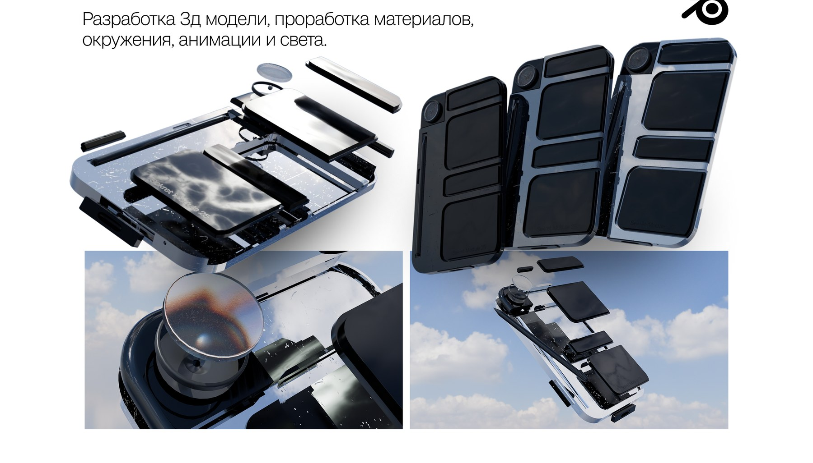
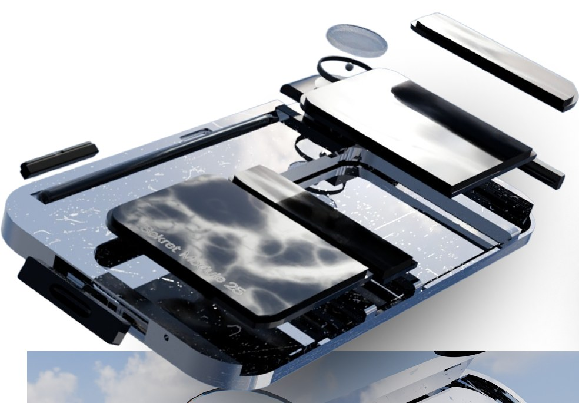
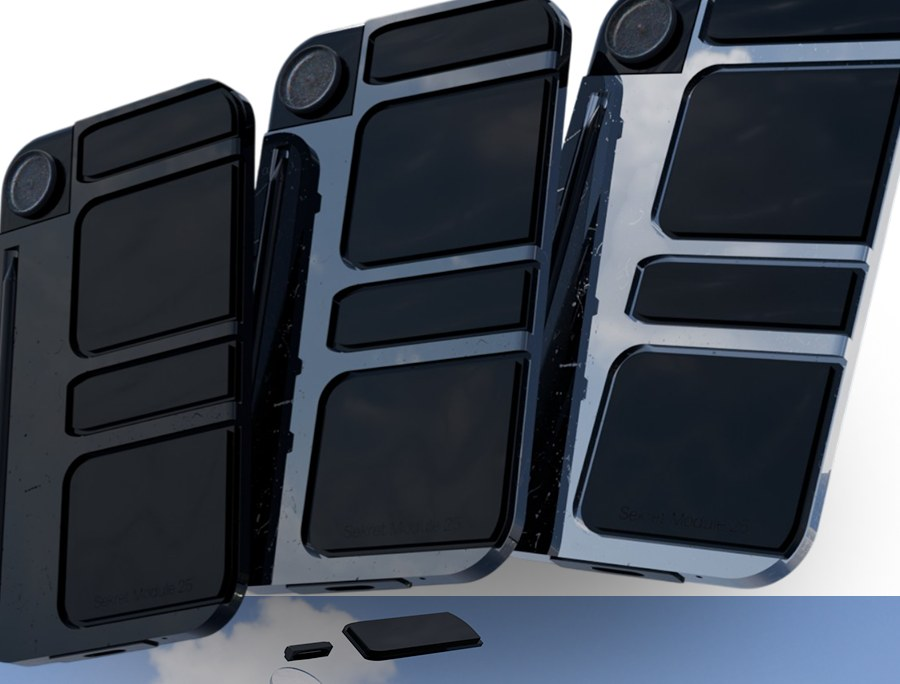
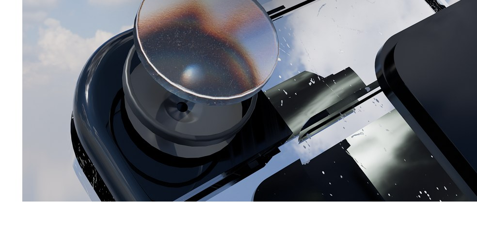
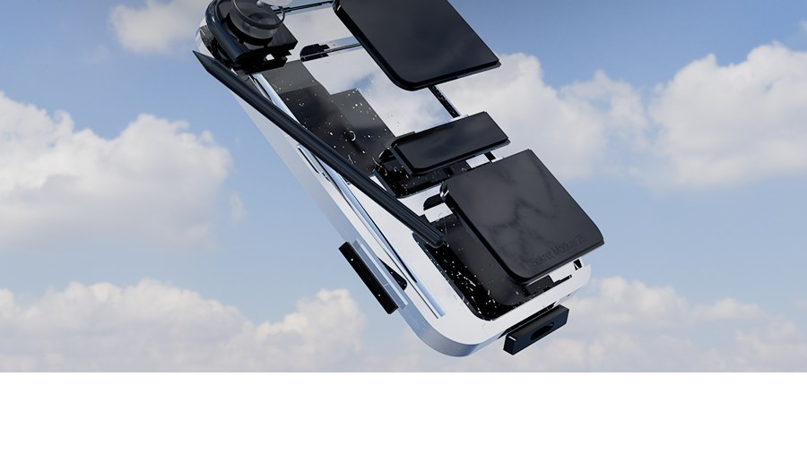

01Challenge
Сделать вымышленное модульное устройство убедительным — чтобы зритель поверил в материал, вес и механику продукта, которого не существует.
PipelineМоделирование → материалы → окружение → свет → анимация

02Response
Полный цикл в Blender: геометрия корпуса и модулей, разборная схема, три стадии складывания и анимация, которая объясняет механику без слов.


03System
Материалы как главный аргумент: анодированный металл, резиновые вставки и стеклянная линза с преломлением сняты крупным планом на фоне реального неба.

04Value
Презентационная 3D-система, где материал продаёт продукт раньше, чем текст.